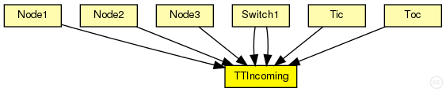
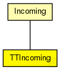

This documentation is released under the Creative Commons license
This documentation is released under the Creative Commons licenseModule for the conformance checks of incoming time-triggered traffic.
The traffic is checked for conformance with the receive window and afterwards delayed until the permanence point in time (permanence_pit). Therefore it registers a timer message (SchedulerActionTimeEvent) with the schduler module (TTEScheduler)
See also: Incoming, SchedulerActionTimeEvent, TTEScheduler
Author: Till Steinbach
The following diagram shows usage relationships between types. Unresolved types are missing from the diagram. Click here to see the full picture.
The following diagram shows inheritance relationships for this type. Unresolved types are missing from the diagram. Click here to see the full picture.
| Name | Type | Description |
|---|---|---|
| Incoming | simple module |
Abstract module for the conformance checks of incoming traffic. |
| Name | Type | Default value | Description |
|---|---|---|---|
| receive_window_start | int |
Beginning of the receive window in number of ticks |
|
| receive_window_end | int |
End of the receive window in number of ticks |
|
| permanence_pit | int |
permanence point in time in number of ticks |
| Name | Value | Description |
|---|---|---|
| class | TTIncoming |
TTIncoming is implemented by the TTIncoming C++ Class |
| display | i=device/firewall |
| Name | Direction | Size | Description |
|---|---|---|---|
| in | input |
input of the ctc |
|
| out | output |
output of the ctc |
|
| schedulerIn | input |
Input gate for the incoming SchedulerActionTimeEvent messages |
| Name | Title | Source | Record | Unit | Interpolation Mode |
|---|---|---|---|---|---|
| ctDropped | CT violation | sum |
// // Module for the conformance checks of incoming time-triggered traffic. // // The traffic is checked for conformance with the receive window and afterwards // delayed until the permanence point in time (permanence_pit). Therefore it registers a // timer message (SchedulerActionTimeEvent) with the schduler module (TTEScheduler) // // @see Incoming, SchedulerActionTimeEvent, TTEScheduler // // @author Till Steinbach simple TTIncoming extends Incoming { parameters: //TTIncoming is implemented by the TTIncoming C++ Class @class(TTIncoming); //Beginning of the receive window in number of ticks int receive_window_start; //End of the receive window in number of ticks int receive_window_end; //permanence point in time in number of ticks int permanence_pit; gates: //Input gate for the incoming SchedulerActionTimeEvent messages input schedulerIn; }
This documentation is released under the Creative Commons license